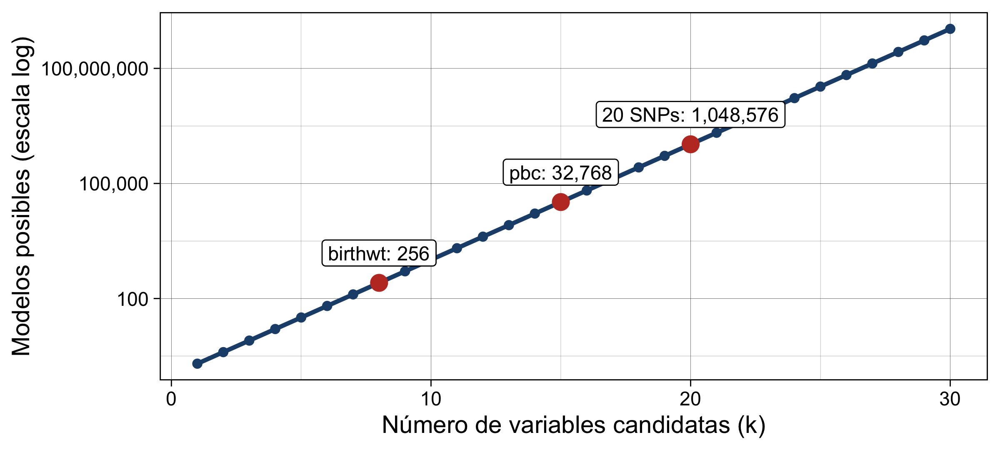
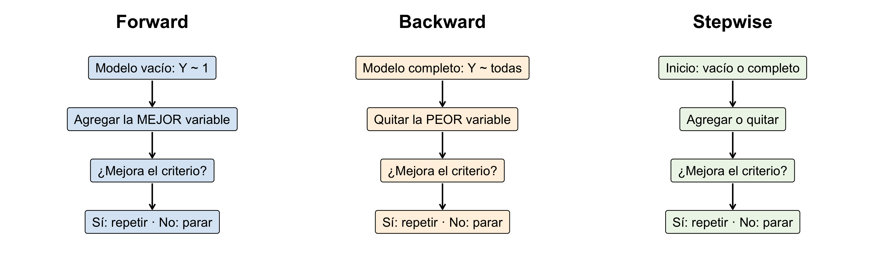
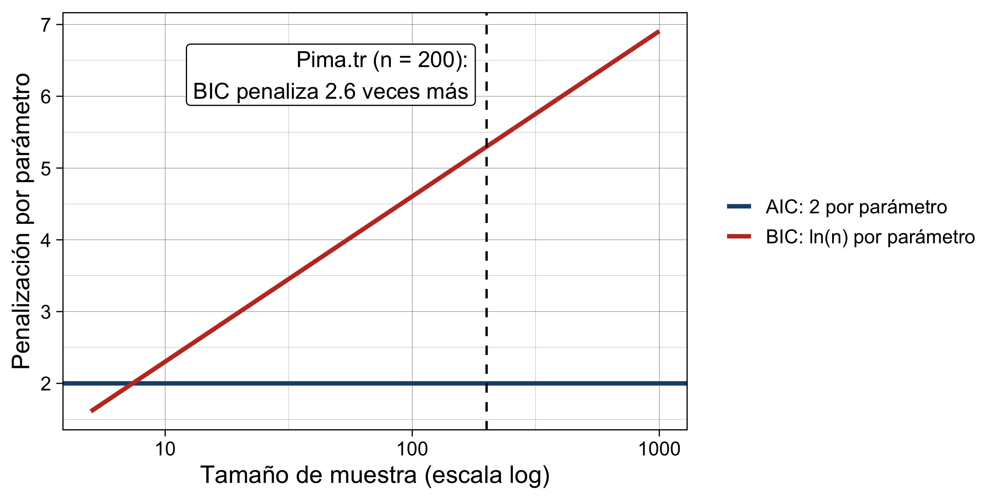
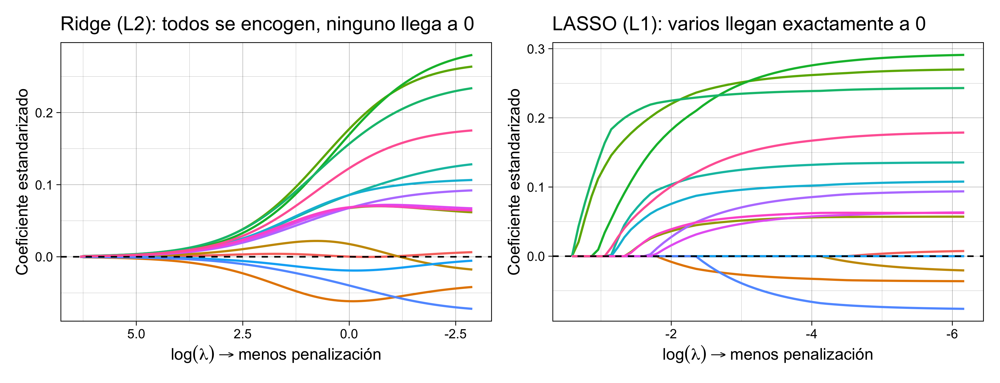
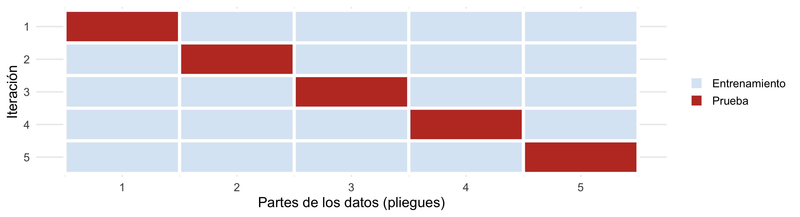
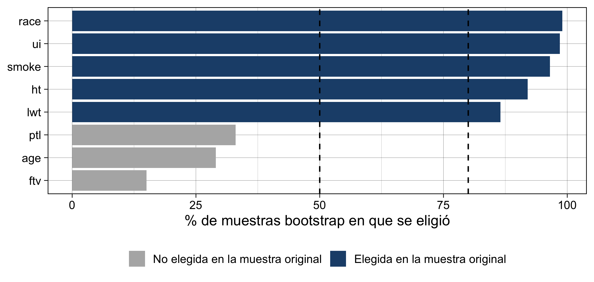
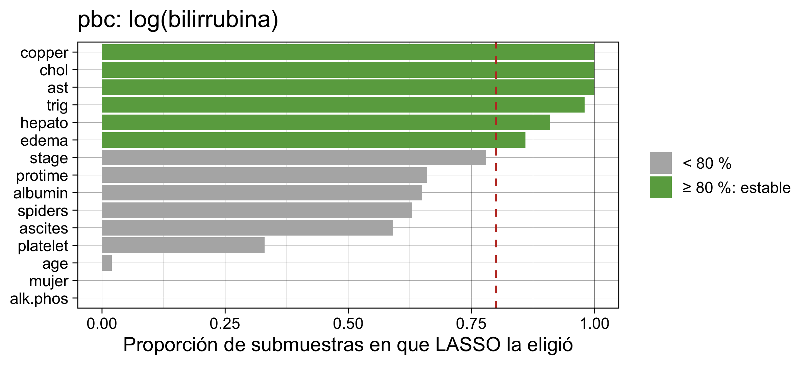
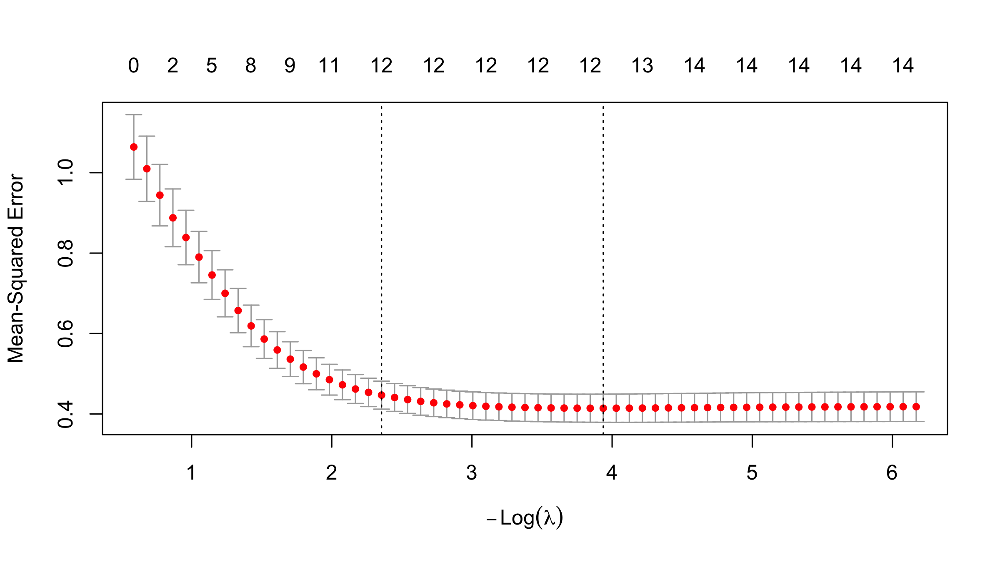

library(ggplot2) # gr{aficos
library(patchwork) # Organización de gráficos
library(MASS) # stepAIC(), birthwt, Pima.tr
library(glmnet) # ridge, LASSO, elastic net
library(performance) # desempeño de los modelosAlgoritmos para la selección de variables · Forward · Backward · Stepwise · AIC/BIC · Regularización · Validación
2026-10-19
| Bloque | Tema |
|---|---|
| 1 | Fundamentos: ¿para qué seleccionar variables? |
| 2 | Métodos secuenciales: forward, backward, stepwise |
| 3 | Criterios: valores p, AIC, BIC, modelos anidados |
| 4 | Regularización: ridge, LASSO, elastic net (panorama) |
| 5 | Validación y estabilidad de la selección (panorama) |
| 6 | Aplicaciones en R y comparación de métodos |
| 7 | Resolución de la tarea |
Objetivo: conocer y comparar los principales métodos de selección de variables en regresión lineal, sus fundamentos, ventajas, limitaciones y aplicaciones en investigación biomédica y genética. Todo lo de hoy se aplica igual a la regresión logística (próximo tema).
En la Parte 2 vimos estrategias en las que decide el investigador: por conocimiento, jerárquica y selección manual intencionada (Bursac et al. 2008).
En la Parte 3 revisamos interacciones y confusores
Hoy: estrategias en las que nos apoyamos de algoritmos para la seleccion de variables.
| Estrategia | Quién decide | Hoy |
|---|---|---|
| Por conocimiento / jerárquica / manual | Investigador | Repaso |
| Secuencial (forward, backward, stepwise) | Algoritmo + criterio (p, AIC, BIC) | Sí |
| Penalizada (ridge, LASSO, elastic net) | Algoritmo + validación cruzada | Panorama |
# 1) Peso al nacer (MASS::birthwt), n = 189
data(birthwt, package = "MASS")
bw <- birthwt
bw$race <- factor(bw$race, labels = c("Blanca", "Negra", "Otra"))
bw$smoke <- factor(bw$smoke, labels = c("No", "Sí"))
bw$ht <- factor(bw$ht, labels = c("No", "Sí")) # hipertensión
bw$ui <- factor(bw$ui, labels = c("No", "Sí")) # irritabilidad uterina
bw$low <- NULL # derivada de bwt: no es predictor
# 2) Mujeres Pima (MASS::Pima.tr), n = 200
data(Pima.tr, package = "MASS")
# 3) Cirrosis biliar primaria (survival::pbc): casos completos
data(pbc, package = "survival")
vars_pbc <- c("bili", "age", "sex", "ascites", "hepato", "spiders", "edema", "chol",
"albumin", "copper", "alk.phos", "ast", "trig", "platelet", "protime", "stage")
pbc2 <- na.omit(pbc[, vars_pbc])
pbc2$log_bili <- log(pbc2$bili) # la bilirrubina es muy asimétrica
pbc2$bili <- NULL
pbc2$mujer <- as.numeric(pbc2$sex == "f") # sexo como 0/1 (facilita glmnet)
pbc2$sex <- NULL
c(birthwt = nrow(bw), Pima = nrow(Pima.tr), pbc = nrow(pbc2))birthwt Pima pbc
189 200 276 Tenemos un desenlace \(Y\) y muchas variables candidatas. ¿Cuáles incluir?
Antes de elegir un método hay que responder: ¿para qué quiero el modelo? La respuesta cambia el método correcto (Heinze, Wallisch, y Dunkler 2018).
Con \(k\) candidatas hay \(2^k\) modelos posibles (cada variable entra o no).

Revisarlos todos (“mejor subconjunto”) es posible con pocas variables. Con muchas, los algoritmos secuenciales recorren solo un camino entre ellos (James et al. 2021).
| Inferencia (explicar) | Predicción | |
|---|---|---|
| Pregunta | ¿Cuál es el efecto de X sobre Y? | ¿Qué tan bien anticipo Y? |
| Qué importa | Coeficientes insesgados con IC válidos | Error de predicción en datos nuevos |
| Variables | Confusores definidos por teoría (DAG) | Las que mejoren la predicción validada |
| Selección automática | Desaconsejada como estrategia principal | Aceptable si se valida |
| Métodos típicos | Conocimiento previo, purposeful, cambio en el estimador | LASSO, elastic net, validación cruzada |
Un algoritmo no sabe qué es un confusor, un mediador o un colisionador (Parte 2 y 3). Puede eliminar un confusor o retener un mediador (Heinze y Dunkler 2017; VanderWeele 2019).

step() (base) o MASS::stepAIC() usan AIC por defecto (Venables y Ripley 2002).| Variable | Descripción |
|---|---|
age, lwt |
Edad (años) y peso materno previo (lb) |
race, smoke |
Raza y tabaquismo en el embarazo |
ptl, ftv |
Partos prematuros previos; visitas médicas en el 1.er trimestre |
ht, ui |
Hipertensión; irritabilidad uterina |
Empieza con el modelo vacío y agrega, una a una, la variable que más mejora el criterio. Se detiene cuando ninguna mejora.
Start: AIC=2493
bwt ~ 1
Df Sum of Sq RSS AIC
+ ui 1 8059031 91910625 2479
+ race 2 5015725 94953931 2487
+ smoke 1 3625946 96343710 2488
+ lwt 1 3448639 96521017 2488
+ ptl 1 2391041 97578614 2490
+ ht 1 2130425 97839231 2491
<none> 99969656 2493
+ age 1 815483 99154173 2493
+ ftv 1 339993 99629663 2494
Step: AIC=2479
bwt ~ ui
Df Sum of Sq RSS AIC
+ race 2 4716436 87194188 2473
+ ht 1 3162595 88748030 2474
+ smoke 1 2996636 88913988 2475
+ lwt 1 2074421 89836203 2477
<none> 91910625 2479
+ ptl 1 854664 91055961 2479
+ age 1 478369 91432256 2480
+ ftv 1 172098 91738526 2481
Step: AIC=2473
bwt ~ ui + race
Df Sum of Sq RSS AIC
+ smoke 1 6124507 81069681 2461
+ ht 1 2689932 84504256 2469
+ lwt 1 2239520 84954668 2470
+ ptl 1 930273 86263915 2473
<none> 87194188 2473
+ ftv 1 65714 87128474 2475
+ age 1 60384 87133804 2475
Step: AIC=2461
bwt ~ ui + race + smoke
Df Sum of Sq RSS AIC
+ ht 1 2457946 78611734 2457
+ lwt 1 1547337 79522343 2460
<none> 81069681 2461
+ ptl 1 255755 80813926 2463
+ ftv 1 10936 81058745 2463
+ age 1 145 81069535 2463
Step: AIC=2457
bwt ~ ui + race + smoke + ht
Df Sum of Sq RSS AIC
+ lwt 1 2674229 75937505 2453
<none> 78611734 2457
+ ptl 1 245703 78366031 2459
+ age 1 562 78611172 2459
+ ftv 1 250 78611484 2459
Step: AIC=2453
bwt ~ ui + race + smoke + ht + lwt
Df Sum of Sq RSS AIC
<none> 75937505 2453
+ ptl 1 117366 75820139 2455
+ age 1 104920 75832585 2455
+ ftv 1 58307 75879197 2455step()<none> = quedarse como está.<none> queda arriba (ningún cambio reduce el AIC).Ventaja: funciona aun con muchas candidatas (incluso más variables que observaciones). Limitación: una variable que entra no vuelve a salir, aunque otra posterior la vuelva redundante (James et al. 2021).
Empieza con el modelo completo y elimina, una a una, la variable cuya salida más mejora el criterio.
Start: AIC=2458
bwt ~ age + lwt + race + smoke + ptl + ht + ui + ftv
Df Sum of Sq RSS AIC
- ftv 1 38708 75741025 2456
- age 1 58238 75760555 2456
- ptl 1 95285 75797602 2456
<none> 75702317 2458
- lwt 1 2661604 78363921 2463
- ht 1 3631032 79333349 2465
- smoke 1 4623219 80325536 2467
- race 2 6578597 82280914 2470
- ui 1 5839544 81541861 2470
Step: AIC=2456
bwt ~ age + lwt + race + smoke + ptl + ht + ui
Df Sum of Sq RSS AIC
- age 1 79115 75820139 2455
- ptl 1 91560 75832585 2455
<none> 75741025 2456
- lwt 1 2623988 78365013 2461
- ht 1 3592430 79333455 2463
- smoke 1 4606425 80347449 2465
- race 2 6552496 82293521 2468
- ui 1 5817995 81559020 2468
Step: AIC=2454
bwt ~ lwt + race + smoke + ptl + ht + ui
Df Sum of Sq RSS AIC
- ptl 1 117366 75937505 2453
<none> 75820139 2455
- lwt 1 2545892 78366031 2459
- ht 1 3546591 79366731 2461
- smoke 1 4530009 80350149 2463
- race 2 6571668 82391807 2466
- ui 1 5751122 81571261 2466
Step: AIC=2453
bwt ~ lwt + race + smoke + ht + ui
Df Sum of Sq RSS AIC
<none> 75937505 2453
- lwt 1 2674229 78611734 2457
- ht 1 3584838 79522343 2460
- smoke 1 4950633 80888138 2463
- race 2 6630123 82567628 2465
- ui 1 6353218 82290723 2466En cada paso evalúa agregar una variable nueva o quitar una que ya está.
bwt ~ ui + race + smoke + ht + lwtbwt ~ lwt + race + smoke + ht + ui variable forward backward stepwise
1 age FALSE FALSE FALSE
2 lwt TRUE TRUE TRUE
3 race TRUE TRUE TRUE
4 smoke TRUE TRUE TRUE
5 ptl FALSE FALSE FALSE
6 ht TRUE TRUE TRUE
7 ui TRUE TRUE TRUE
8 ftv FALSE FALSE FALSEAquí los tres coinciden: lwt, race, smoke, ht y ui. No siempre ocurre: en la tarea (base diabetes) forward y backward eligen modelos distintos.
| Ventajas | Limitaciones |
|---|---|
| Rápidos y automáticos | Recorren un solo camino: no garantizan el “mejor” modelo |
| Reproducibles | Resultados inestables: pequeños cambios en los datos cambian las variables elegidas |
| Útiles para explorar muchas candidatas | Valores p, EE e IC del modelo final son demasiado optimistas |
| Disponibles en todo software | Coeficientes inflados (sesgo de selección) |
| Ignoran confusión, mediación y plausibilidad biológica |
Estas limitaciones están bien documentadas desde hace décadas (Harrell 2015; Whittingham et al. 2006; Smith 2018). Los revisaremos en el bloque 5.
El criterio clásico: entra la variable con menor p (si p < α de entrada); sale la de mayor p (si p > α de salida).
Single term deletions
Model:
bwt ~ age + lwt + race + smoke + ptl + ht + ui + ftv
Df Sum of Sq RSS AIC F value Pr(>F)
<none> 75702317 2458
age 1 58238 75760555 2456 0.14 0.71101
lwt 1 2661604 78363921 2463 6.29 0.01301 *
race 2 6578597 82280914 2470 7.78 0.00058 ***
smoke 1 4623219 80325536 2467 10.93 0.00114 **
ptl 1 95285 75797602 2456 0.23 0.63561
ht 1 3631032 79333349 2465 8.59 0.00383 **
ui 1 5839544 81541861 2470 13.81 0.00027 ***
ftv 1 38708 75741025 2456 0.09 0.76260
---
Signif. codes: 0 '***' 0.001 '**' 0.01 '*' 0.05 '.' 0.1 ' ' 1ftv), se reajusta y se repite hasta que todas tengan p < α.\[AIC = n\ln\left(\frac{SCE}{n}\right) + 2k \qquad \text{(regresión lineal)}\]
\[BIC = n\ln\left(\frac{SCE}{n}\right) + k\ln(n)\]
glu ~ bmi + ageAIC retuvo bp (presión diastólica); BIC la eliminó. ¿Cuál elegir? Depende del objetivo y del conocimiento previo.

Dos modelos son anidados si uno contiene todas las variables del otro. Se comparan con la prueba F parcial (Parte 2):
Analysis of Variance Table
Model 1: glu ~ bmi + age
Model 2: glu ~ bp + bmi + age
Res.Df RSS Df Sum of Sq F Pr(>F)
1 197 170053
2 196 167474 1 2579 3.02 0.084 .
---
Signif. codes: 0 '***' 0.001 '**' 0.01 '*' 0.05 '.' 0.1 ' ' 1# Comparison of Model Performance Indices
Name | Model | AIC (weights) | BIC (weights) | R2 (adj.) | RMSE
-------------------------------------------------------------------------
m_pima_bic | lm | 1924.7 (0.371) | 1937.9 (0.754) | 0.139 | 29.159
m_pima_aic | lm | 1923.6 (0.629) | 1940.1 (0.246) | 0.148 | 28.937Responde: ¿agregar bp mejora significativamente?
La prueba F no es significativa a α = 0.05, pero AIC prefiere el modelo con bp: con 1 g.l., AIC equivale a usar α ≈ 0.157 (Heinze, Wallisch, y Dunkler 2018). Cada criterio implica un umbral distinto.
| Criterio | Penalización | Tiende a | Úselo para |
|---|---|---|---|
| Valor p (F, Wald) | Umbral α elegido | Depende de α | Modelos anidados, hipótesis específicas |
| \(R^2\) ajustado | Leve | Modelos grandes | Descripción |
| AIC | \(2k\) | Modelos algo más grandes | Predicción |
| BIC | \(k\ln(n)\) | Modelos más pequeños | Parsimonia, n grande |
| Validación cruzada | Error en datos no usados | Depende de los datos | Predicción (bloque 5) |
Ningún criterio sustituye al conocimiento del problema. Declare siempre el criterio y los umbrales usados.
Los métodos secuenciales deciden dentro/fuera. La regularización ajusta todas las variables, pero penaliza los coeficientes grandes (James et al. 2021; Hastie, Tibshirani, y Friedman 2009):
\[\text{minimizar: } \underbrace{\sum (y_i - \hat y_i)^2}_{\text{ajuste}} + \underbrace{\lambda \times \text{penalización}(\beta)}_{\text{encogimiento}}\]

Datos pbc: log(bilirrubina) con 15 candidatas. De derecha a izquierda aumenta la penalización.
| Método | Penalización | ¿Selecciona? | Mejor cuando… |
|---|---|---|---|
| Ridge | L2 | No | Muchas variables, todas aportan un poco; colinealidad |
| LASSO | L1 | Sí | Pocas variables realmente importantes |
| Elastic net | L1 + L2 | Sí | Grupos de variables correlacionadas; \(p \gg n\) |
Precaución: los coeficientes están sesgados hacia 0 a propósito; no se usan para inferencia clásica (IC, p) (James et al. 2021).

Repetimos backward (AIC) en 200 muestras bootstrap de birthwt y contamos cuántas veces se elige cada variable (Sauerbrei y Schumacher 1992; Austin y Tu 2004).

Variables elegidas en > 80 % de las réplicas son estables; las que aparecen 20–50 % dependen del azar de la muestra. El modelo “final” de un solo stepwise oculta esta incertidumbre.

step() y stepAIC(): argumentos clave| Argumento | Para qué |
|---|---|
object |
Modelo inicial (nulo para forward, completo para backward) |
scope |
Límite superior (y opcionalmente inferior) de variables |
direction |
"forward", "backward" o "both" |
k |
Penalización: 2 = AIC (por defecto); log(n) = BIC |
trace |
1 muestra cada paso; 0 lo oculta |
bwt ~ age + lwt + race + smoke + ht + uiTodos los modelos deben ajustarse con las mismas observaciones: elimine los NA antes (na.omit() sobre las variables candidatas). Si no, step() se detiene con error o compara modelos con distinto n.
glmnet# glmnet necesita una matriz de predictores (model.matrix crea las dummies) y un vector Y
X_pbc <- model.matrix(log_bili ~ ., data = pbc2)[, -1] # [, -1] quita el intercepto
y_pbc <- pbc2$log_bili
set.seed(123)
cv_lasso <- cv.glmnet(X_pbc, y_pbc, alpha = 1) # LASSO con validación cruzada de 10 pliegues
plot(cv_lasso) # error de VC según lambda
Línea izquierda: λ con mínimo error (lambda.min). Línea derecha: λ más grande con error a 1 EE del mínimo (lambda.1se), un modelo más simple con error similar.
set.seed(123); cv_ridge <- cv.glmnet(X_pbc, y_pbc, alpha = 0) # ridge
set.seed(123); cv_enet <- cv.glmnet(X_pbc, y_pbc, alpha = 0.5) # elastic net
coefs <- cbind(ridge = coef(cv_ridge, s = "lambda.1se")[, 1],
lasso = coef(cv_lasso, s = "lambda.1se")[, 1],
e_net = coef(cv_enet, s = "lambda.1se")[, 1])
round(coefs, 4) # un 0 exacto = variable eliminada ridge lasso e_net
(Intercept) -0.9867 -1.4449 -1.3742
age 0.0000 0.0000 0.0000
ascites 0.2691 0.1768 0.1949
hepato 0.1743 0.1745 0.1724
spiders 0.1515 0.0692 0.0836
edema 0.3256 0.4249 0.3943
chol 0.0007 0.0009 0.0009
albumin -0.1523 -0.0453 -0.0654
copper 0.0018 0.0026 0.0025
alk.phos 0.0000 0.0000 0.0000
ast 0.0032 0.0042 0.0040
trig 0.0019 0.0019 0.0019
platelet -0.0004 0.0000 -0.0001
protime 0.0687 0.0489 0.0526
stage 0.0811 0.0571 0.0604
mujer -0.0579 0.0000 0.0000completo_pbc <- lm(log_bili ~ ., data = pbc2)
m_pbc_aic <- step(completo_pbc, trace = 0) # backward AIC
m_pbc_bic <- step(completo_pbc, k = log(nrow(pbc2)), trace = 0) # backward BIC
todas <- colnames(X_pbc)
comparacion <- data.frame(
variable = todas,
AIC = todas %in% variables(m_pbc_aic),
BIC = todas %in% variables(m_pbc_bic),
LASSO = coef(cv_lasso, s = "lambda.1se")[-1, 1] != 0,
e_net = coef(cv_enet, s = "lambda.1se")[-1, 1] != 0)
comparacion$n_metodos <- rowSums(comparacion[, -1])
comparacion[order(-comparacion$n_metodos), ] variable AIC BIC LASSO e_net n_metodos
hepato hepato TRUE TRUE TRUE TRUE 4
edema edema TRUE TRUE TRUE TRUE 4
chol chol TRUE TRUE TRUE TRUE 4
copper copper TRUE TRUE TRUE TRUE 4
ast ast TRUE TRUE TRUE TRUE 4
trig trig TRUE TRUE TRUE TRUE 4
platelet platelet TRUE TRUE TRUE TRUE 4
protime protime TRUE TRUE TRUE TRUE 4
spiders spiders TRUE FALSE TRUE TRUE 3
stage stage TRUE FALSE TRUE TRUE 3
ascites ascites FALSE FALSE TRUE TRUE 2
albumin albumin FALSE FALSE TRUE TRUE 2
age age FALSE FALSE FALSE FALSE 0
alk.phos alk.phos FALSE FALSE FALSE FALSE 0
mujer mujer FALSE FALSE FALSE FALSE 0Las variables elegidas por todos los métodos son las más confiables; las que dependen del método merecen cautela.
# Comparison of Model Performance Indices
Name | Model | AIC (weights) | BIC (weights) | R2 (adj.) | RMSE
------------------------------------------------------------------------
completo_pbc | lm | 538.9 (0.021) | 600.5 (<.001) | 0.637 | 0.604
m_pbc_aic | lm | 531.9 (0.729) | 575.3 (0.072) | 0.640 | 0.607
m_pbc_bic | lm | 534.0 (0.250) | 570.2 (0.928) | 0.635 | 0.614completo AIC BIC
0.6473 0.6387 0.6410 Compare el RMSE aparente con el de validación cruzada: la diferencia es el optimismo. Un modelo más simple puede predecir igual o mejor en datos nuevos.
Todo lo anterior funciona con un desenlace binario cambiando una línea:
Próximo tema: regresión logística. Los criterios (AIC, BIC, LRT), la validación y las advertencias sobre la selección automática son los mismos.
faraway::diabetes: preparación[1] 366 14stab.glu ~ glyhb + time.ppn + framestab.glu ~ glyhb + gender + time.ppnstab.glu ~ glyhb + time.ppn + frame# Comparison of Model Performance Indices
Name | Model | AIC (weights) | BIC (weights) | R2 (adj.) | RMSE
--------------------------------------------------------------------------
t1_forward | lm | 3669.8 (0.376) | 3693.2 (0.151) | 0.556 | 35.802
t1_backward | lm | 3670.6 (0.247) | 3690.1 (0.698) | 0.554 | 35.941
t1_stepwise | lm | 3669.8 (0.376) | 3693.2 (0.151) | 0.556 | 35.802 Estimate Std. Error t value Pr(>|t|)
(Intercept) 14.6178 6.0125 2.431 0.0155
glyhb 17.9762 0.8494 21.165 0.0000
genderfemale -5.8459 3.8397 -1.522 0.1288
time.ppn -0.0135 0.0061 -2.220 0.0271NHANES: preparacióndata(NHANES, package = "NHANES")
nh <- NHANES[!duplicated(NHANES$ID) & NHANES$Age >= 20, ] # una fila por persona, adultos
nh <- na.omit(nh[, c("BPSysAve", "Age", "Gender", "Race1", "Education", "Poverty", "BMI",
"Pulse", "TotChol", "DirectChol", "Diabetes", "PhysActive",
"Smoke100", "SleepHrsNight")])
dim(nh)[1] 3869 14t2_forward <- step(t2_nulo, scope = formula(t2_completo), direction = "forward", trace = 0)
t2_backward <- step(t2_completo, direction = "backward", trace = 0)
t2_stepwise <- step(t2_nulo, scope = formula(t2_completo), direction = "both", trace = 0)
t2_bic <- step(t2_nulo, scope = formula(t2_completo), direction = "both",
k = log(nrow(nh)), trace = 0)
formula(t2_forward)BPSysAve ~ Age + Gender + Poverty + BMI + TotChol + Race1 + Pulse +
Diabetes + PhysActive + Education + DirectCholBPSysAve ~ Age + Gender + Race1 + Education + Poverty + BMI +
Pulse + TotChol + DirectChol + Diabetes + PhysActiveBPSysAve ~ Age + Gender + Poverty + BMI + TotChol + Race1 + Pulse +
Diabetes + PhysActive + Education + DirectCholBPSysAve ~ Age + Gender + Poverty + BMI + TotChol# Comparison of Model Performance Indices
Name | Model | AIC (weights) | BIC (weights) | R2 (adj.) | RMSE
----------------------------------------------------------------------------
t2_stepwise | lm | 31964.1 (>.999) | 32083.0 (<.001) | 0.233 | 14.983
t2_bic | lm | 32005.1 (<.001) | 32048.9 (>.999) | 0.223 | 15.110 Estimate Std. Error t value Pr(>|t|)
(Intercept) 88.9292 1.7187 51.743 0
Age 0.4293 0.0143 30.019 0
Gendermale 4.9958 0.4885 10.226 0
Poverty -0.9733 0.1479 -6.583 0
BMI 0.2103 0.0357 5.883 0
TotChol 1.1828 0.2324 5.090 0riskCommunicator::framingham: preparacióndata(framingham, package = "riskCommunicator")
fr <- subset(framingham, PERIOD == 1) # visita basal
fr$SEX <- factor(fr$SEX, levels = 1:2, labels = c("Hombre", "Mujer"))
fr$educ <- factor(fr$educ)
fr <- na.omit(fr[, c("TOTCHOL", "SEX", "AGE", "SYSBP", "DIABP", "CURSMOKE", "CIGPDAY", "BMI",
"DIABETES", "BPMEDS", "HEARTRTE", "GLUCOSE", "educ", "PREVCHD", "PREVHYP")])
dim(fr)[1] 3826 15t3_forward <- step(t3_nulo, scope = formula(t3_completo), direction = "forward", trace = 0)
t3_backward <- step(t3_completo, direction = "backward", trace = 0)
t3_stepwise <- step(t3_nulo, scope = formula(t3_completo), direction = "both", trace = 0)
t3_bic <- step(t3_nulo, scope = formula(t3_completo), direction = "both",
k = log(nrow(fr)), trace = 0)
formula(t3_forward)TOTCHOL ~ AGE + DIABP + HEARTRTE + SEX + BMI + CIGPDAY + educ +
BPMEDS + PREVCHDTOTCHOL ~ SEX + AGE + DIABP + CIGPDAY + BMI + BPMEDS + HEARTRTE +
educ + PREVCHDTOTCHOL ~ AGE + DIABP + HEARTRTE + SEX + BMI + CIGPDAY + educ +
BPMEDS + PREVCHDTOTCHOL ~ AGE + DIABP + HEARTRTE + SEX + BMI# Comparison of Model Performance Indices
Name | Model | AIC (weights) | BIC (weights) | R2 (adj.) | RMSE
----------------------------------------------------------------------------
t3_stepwise | lm | 39479.7 (0.999) | 39560.9 (<.001) | 0.097 | 41.974
t3_bic | lm | 39493.9 (<.001) | 39537.7 (>.999) | 0.092 | 42.118 Estimate Std. Error t value Pr(>|t|)
(Intercept) 111.2584 7.1505 15.559 0.0000
AGE 1.1427 0.0806 14.180 0.0000
DIABP 0.3514 0.0628 5.598 0.0000
HEARTRTE 0.2538 0.0579 4.384 0.0000
SEXMujer 5.9115 1.3824 4.276 0.0000
BMI 0.6645 0.1813 3.666 0.0003 variable forward backward stepwise
1 chol FALSE FALSE FALSE
2 hdl FALSE FALSE FALSE
3 glyhb TRUE TRUE TRUE
4 location FALSE FALSE FALSE
5 age FALSE FALSE FALSE
6 gender FALSE TRUE FALSE
7 bmi FALSE FALSE FALSE
8 frame TRUE FALSE TRUE
9 bp.1s FALSE FALSE FALSE
10 bp.1d FALSE FALSE FALSE
11 waist FALSE FALSE FALSE
12 hip FALSE FALSE FALSE
13 time.ppn TRUE TRUE TRUE variable forward backward stepwise
1 Age TRUE TRUE TRUE
2 Gender TRUE TRUE TRUE
3 Race1 TRUE TRUE TRUE
4 Education TRUE TRUE TRUE
5 Poverty TRUE TRUE TRUE
6 BMI TRUE TRUE TRUE
7 Pulse TRUE TRUE TRUE
8 TotChol TRUE TRUE TRUE
9 DirectChol TRUE TRUE TRUE
10 Diabetes TRUE TRUE TRUE
11 PhysActive TRUE TRUE TRUE
12 Smoke100 FALSE FALSE FALSE
13 SleepHrsNight FALSE FALSE FALSE variable forward backward stepwise
1 SEX TRUE TRUE TRUE
2 AGE TRUE TRUE TRUE
3 SYSBP FALSE FALSE FALSE
4 DIABP TRUE TRUE TRUE
5 CURSMOKE FALSE FALSE FALSE
6 CIGPDAY TRUE TRUE TRUE
7 BMI TRUE TRUE TRUE
8 DIABETES FALSE FALSE FALSE
9 BPMEDS TRUE TRUE TRUE
10 HEARTRTE TRUE TRUE TRUE
11 GLUCOSE FALSE FALSE FALSE
12 educ TRUE TRUE TRUE
13 PREVCHD TRUE TRUE TRUE
14 PREVHYP FALSE FALSE FALSEBioestadística con R · Modelos lineales — Parte 4